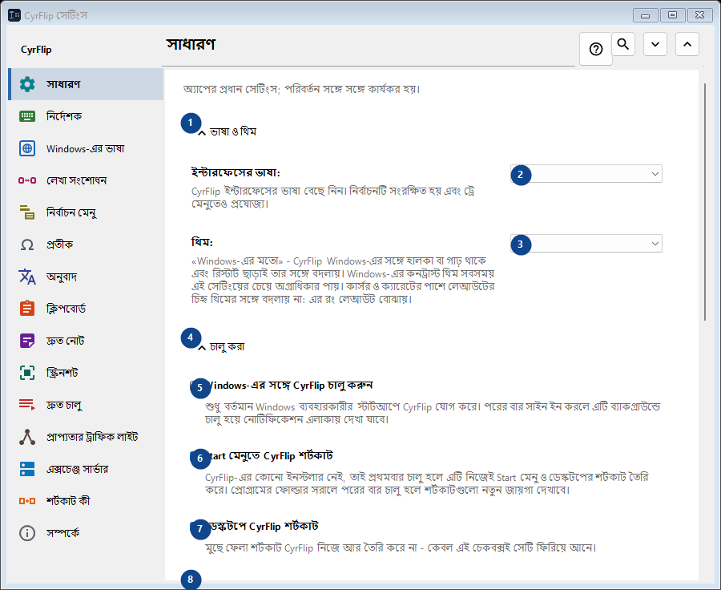
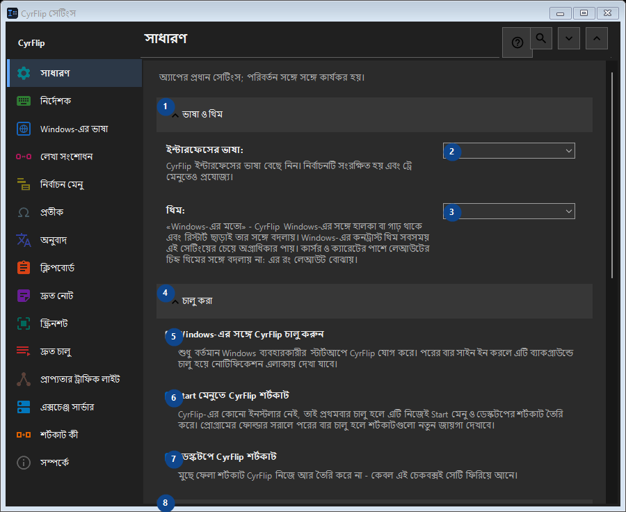

সাধারণ
এর কাজ
অ্যাপের প্রধান সেটিংস; পরিবর্তন সঙ্গে সঙ্গে কার্যকর হয়।


ব্যবহারের ক্রম
সেটিং সঙ্গে সঙ্গে প্রয়োগ হয়। নির্দিষ্ট ক্রম নেই; নিচের দলগুলি ব্যবহার করুন।
উপাদান
1. ভাষা ও থিম
উল্লিখিত কাজের জন্য এই নির্দেশ ব্যবহার করুন। মেনে নেওয়ার আগে নিশ্চিতকরণ পড়ুন।
আপনার শর্টকাট2. ইন্টারফেসের ভাষা
পাশের লেবেল অনুযায়ী মান বাছুন বা লিখুন। এগোনোর আগে পরীক্ষা করুন।
আপনার শর্টকাট3. থিম
পাশের লেবেল অনুযায়ী মান বাছুন বা লিখুন। এগোনোর আগে পরীক্ষা করুন।
আপনার শর্টকাট4. চালু করা
উল্লিখিত কাজের জন্য এই নির্দেশ ব্যবহার করুন। মেনে নেওয়ার আগে নিশ্চিতকরণ পড়ুন।
আপনার শর্টকাট5. Windows-এর সঙ্গে CyrFlip চালু করুন
শুধু বর্তমান Windows ব্যবহারকারীর স্টার্টআপে CyrFlip যোগ করে। পরের বার সাইন ইন করলে এটি ব্যাকগ্রাউন্ডে চালু হয়ে নোটিফিকেশন এলাকায় দেখা যাবে।
আপনার শর্টকাট6. Start মেনুতে CyrFlip শর্টকাট
CyrFlip-এর কোনো ইনস্টলার নেই, তাই প্রথমবার চালু হলে এটি নিজেই Start মেনু ও ডেস্কটপের শর্টকাট তৈরি করে। প্রোগ্রামের ফোল্ডার সরালে পরের বার চালু হলে শর্টকাটগুলো নতুন জায়গা দেখাবে।
আপনার শর্টকাট7. ডেস্কটপে CyrFlip শর্টকাট
মুছে ফেলা শর্টকাট CyrFlip নিজে আর তৈরি করে না - কেবল এই চেকবক্সই সেটি ফিরিয়ে আনে।
আপনার শর্টকাট8. পাওয়ার ও স্ক্রিন
উল্লিখিত কাজের জন্য এই নির্দেশ ব্যবহার করুন। মেনে নেওয়ার আগে নিশ্চিতকরণ পড়ুন।
আপনার শর্টকাট9. কম্পিউটারকে ঘুমাতে দেবেন না
চালু থাকা অবস্থায় নিষ্ক্রিয়তায় Windows ঘুমাবে বা হাইবারনেট করবে না — দীর্ঘ ডাউনলোড, কপি বা রেন্ডারের জন্য সুবিধাজনক। অবস্থা সংরক্ষিত হয়: চালু রেখে দেওয়া সুইচ পুনরায় চালুর পরেও কম্পিউটারকে জাগিয়ে রাখবে - CyrFlip আপনার ব্যাটারির দেখাশোনা করবে না।
আপনার শর্টকাট10. স্ক্রিন চালু রাখুন (ভিডিওর মতো)
ভিডিও দেখার সময়ের মতোই নিষ্ক্রিয়তায় স্ক্রিন বন্ধ বা লক হয় না। এটি পাসওয়ার্ড লক (Win+L বা নিরাপত্তা নীতি) বাতিল করে না। অবস্থা সংরক্ষিত হয়: চালু রেখে দেওয়া সুইচ পুনরায় চালুর পরেও স্ক্রিন চালু রাখবে।
আপনার শর্টকাট11. সেটিংস স্থানান্তর
উল্লিখিত কাজের জন্য এই নির্দেশ ব্যবহার করুন। মেনে নেওয়ার আগে নিশ্চিতকরণ পড়ুন।
আপনার শর্টকাট12. সেটিংস রপ্তানি করুন...
উল্লিখিত কাজের জন্য এই নির্দেশ ব্যবহার করুন। মেনে নেওয়ার আগে নিশ্চিতকরণ পড়ুন।
আপনার শর্টকাট13. সেটিংস আমদানি করুন...
উল্লিখিত কাজের জন্য এই নির্দেশ ব্যবহার করুন। মেনে নেওয়ার আগে নিশ্চিতকরণ পড়ুন।
আপনার শর্টকাট14. আমদানির আগের সেটিংস ফিরিয়ে আনুন...
এখনও পুনরুদ্ধার করার কিছু নেই: প্রথম পরিবর্তনের ঠিক আগে CyrFlip মূল অবস্থা সংরক্ষণ করে। এই উপাদান এখন উপলব্ধ নয়। আগে বৈশিষ্ট্য চালু করুন বা একটি এন্ট্রি বাছুন।
আপনার শর্টকাট15. সেটিংসের ব্যাকআপ Documents ফোল্ডারে রাখুন
চালু থাকলে CyrFlip প্রতিটি সেটিংসের রোলিং ব্যাকআপ Documents\CyrFlip\Backups-এ রাখে - সর্বশেষ তিনটি রাখা হয়। ব্যাকআপ Microsoft Store থেকে পুনরায় ইনস্টলেও টিকে থাকে: নতুন ইনস্টল এটি খুঁজে পুনরুদ্ধারের প্রস্তাব দেয়। ফাইলে আপনার হোস্ট, সাইট ও দৃশ্য আছে - এটি গোপন রাখুন।
আপনার শর্টকাট16. ব্যাকআপ ফোল্ডার খুলুন
ব্যাকআপগুলো সাধারণ সেটিংস ফাইল, তারিখ দিয়ে নামকরণ করা। একটি কপি করতে বা অন্য কম্পিউটারে নিতে ফোল্ডারটি খুলুন।
আপনার শর্টকাট